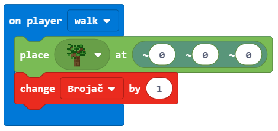

Projektni zadatak - Koliko ima stabala¶
Računaru su potrebni kontejneri za čuvanje brojeva, teksta i drugih informacija, tako da na osnovu tih informacija kasnije može donositi određene odluke. Na primer, ako želimo da se bavimo vremenskom prognozom, za to su nam potrebne promenljive kao što su: temperatura, vreme, dan u nedelji, količina padavina, itd.
Promenljivu možemo da shvatimo kao prostor u memoriji računara, u kome se, za vreme izvršavanja programa, čuvaju neke međuvrednosti (npr. Broj posađenih stabala u svetu).
Svaka promenljiva sadrži određenu vrstu informacija. Prvi put kada se koristi, potrebno je definisati njen tip (broj, string (tekst – niz alfanumeričkih znakova), logički (tačno. netačno)). Od tog trenutka pa do kraja programa, u tu promenljivu možemo da skladištimo samo informacije zadatog tipa.
Promenljive imaju svoja imena. Kada u programu želiš da koristiš vrednost promenljive, dovoljno je da navedeš njeno ime.
Važno: Izborom pravog imena za promenljivu olakšava se razumevanje kreiranih programa. Na primer, ako želimo da čuvamo broj života igrača u igrici, promenljiva bi mogla da se imenuje kao broj_zivota, bolje nego ziv ili broj. Imena promenljivih sadrže slova, brojeve i specijalni karkter _(donja crta), i uvek mora da počinje slovom.
U predhodnom primeru, videli smo da je pozicija objekta (lika, sveta) posebna vrsta promenljive koja sadrži tri broja koji opisuju određenu lokaciju u trodimenzionalnom prostoru. Ovi brojevi se zovu X, Y i Z koordinate.
Kreiranje i upotreba promenljivih demonstriraćemo na primeru prebrojavanja zasađenih dvreća tokom kretanja lika po svetu.
Faza 1.
Razmišljanje o problemu: Kretanjem po svetu sadi se drvo po svetu. Svaki put kada se zasadi drvo povećava se broj stabala u svetu.
Faza 2
Pokreni Code Builder (klikom na taster C) i otvoriće se editor prozor u kome je moguće ređati blokove.
Da bismo prebrojali zasađena drva nadogradićemo program iz projekta Sadjenje drveca:

Potrebno je da kreiramo promenljivu Brojač koja će da čuva broj zasađenih stabala.
Promenljivu kreiramo tako što, u kategoriji Variables (1), kliknemo na dugme Make a variable (Napravi promenljivu) (2) i u polje unosimo ime promenljive (3), u našem slučaju Brojač. Klikom na dugme OK (4), kreirana je promenljiva (5):

Na početku vrednost promenljive Brojač biće nula.
Postavljanje početne vrednosti (resetovanje na početnu vrednost) ćemo definisati blokom  . To znači da svaki put kada se pokrene program Minecraft postavlja vrednost brojača na nulu, i moguće je započeti brojanje zasađenih stabala.
. To znači da svaki put kada se pokrene program Minecraft postavlja vrednost brojača na nulu, i moguće je započeti brojanje zasađenih stabala.
Izaberi iz kategorije  blok . Ovaj blok će nam biti „okidač“ resetovanja promenljive Brojač.
blok . Ovaj blok će nam biti „okidač“ resetovanja promenljive Brojač.
Iz kategorije  prevlačimo blok
prevlačimo blok  Brojač to
Brojač to 0:

Sada program za Sađenje drveća:
dopunjavamo tako što dodajemo za registrovanje promene vrednosti promenljive Brojač.
Kreiranu promenljivu Brojač, čiju početnu vrednost smo postavili na nulu, sada treba da iskoristimo, na taj način što će se njena vrednost menjati (uvećavati za jedan) svaki put kada lik postavi blok, tačnije zasadi drvo.
Za to ćemo koristiti iz kategorije Variables blok  . Ovaj blok ćemo prevući u deo koda koji se koristi za postavljanje (sađenje drveća), kao i blok kojim ćemo prikazati (izgovoriti) koliko je zasađeno drveća.
. Ovaj blok ćemo prevući u deo koda koji se koristi za postavljanje (sađenje drveća), kao i blok kojim ćemo prikazati (izgovoriti) koliko je zasađeno drveća.
Izgled koda nakon promene:
Na kraju, da bismo videli koliko je zasađeno drveća uvodimo blok za  u kome prevlačimo bloka
u kome prevlačimo bloka  . U ovaj blok prevlačimo blok .
. U ovaj blok prevlačimo blok .
Izgled koda:

Izgled programa za prebrojavanje dvreća:

Faza 3
Testiranje programa. Klikom na dugme .
{kind=link}

Nakon testiranja, možemo da zaključimo da program radi upravo ono što želimo. Broj zasađena drveća prilikom kretanja lika kroz svet.